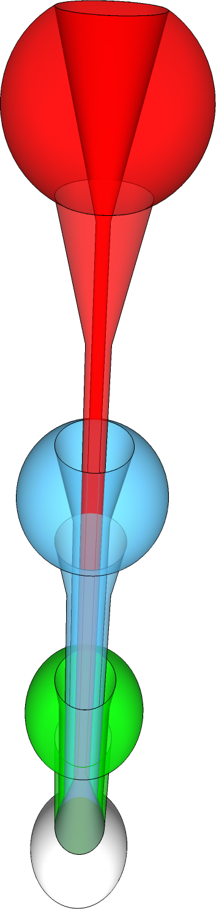
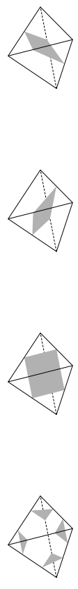
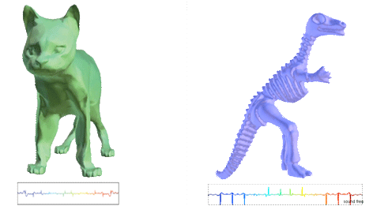
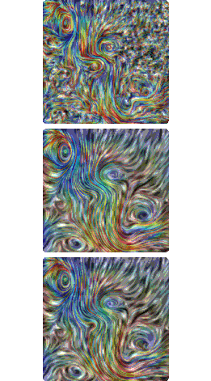
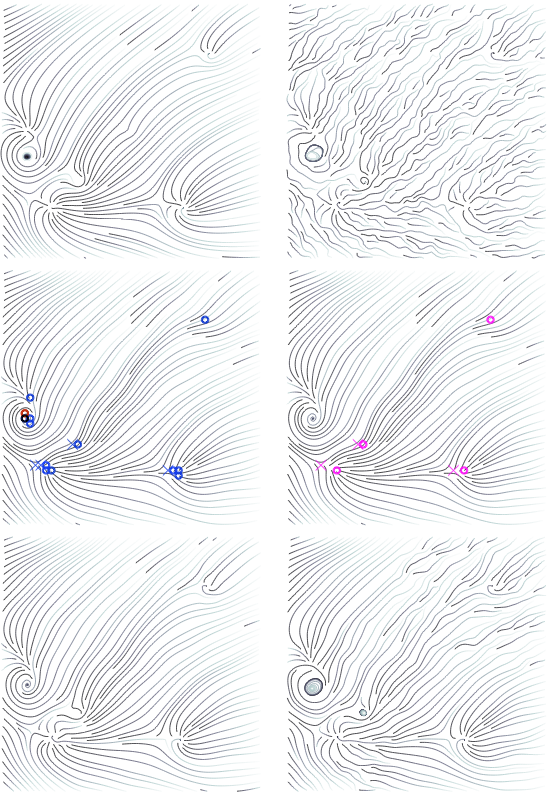

Parameterized COmplexity of DIscrete Morse Theory
BENJAMIN A. BURTON, THOMAS LEWINER, JOAO PAIXAO, JONATHAN SPREER
Twenty-Ninth Annual Symposium on Computational Geometry, SoCG (2013)
Optimal Morse matchings reveal essential structures of cell complexes which lead to powerful tools to study discrete geometrical objects, in particular discrete 3-manifolds. However, such matchings are known to be NP-hard to compute on 3-manifolds, through a reduction to the erasability problem.
Here, we refine the study of the complexity of problems related to discrete Morse theory in terms of parameterized complexity. On the one hand we prove that the erasability problem is W[P]-complete on the natural parameter. On the other hand we propose an algorithm for computing optimal Morse matchings on triangulations of 3-manifolds which is fixed-parameter tractable in the treewidth of the bipartite graph representing the adjacency of the 1- and 2-simplexes. This algorithm also shows fixed parameter tractability for problems such as erasability and maximum alternating cycle-free matching. We further show that these results are also true when the treewidth of the dual graph of the triangulated 3-manifold is bounded. Finally, we investigate the respective treewidths of simplicial and generalized triangulations of 3-manifolds.

Computational Topology and normal SurfaceS: Theoretical and ExperimentaL COmplexity Bounds
BENJAMIN A. BURTON, JOAO PAIXAO, JONATHAN SPREER
The Visual Computer (2011)
In three-dimensional computational topology, the theory of normal surfaces is a tool of great theoretical and practical significance. Although this theory typically leads to exponential time algorithms, very little is known about how these algorithms perform in "typical" scenarios, or how far the best known theoretical bounds are from the real worst-case scenarios. Here we study the combinatorial and algebraic complexity of normal surfaces from both the theoretical and experimental viewpoints. Theoretically, we obtain new exponential lower bounds on the worst-case complexities in a variety of settings that are important for practical computation. Experimentally, we study the worst-case and average-case complexities over a comprehensive body of roughly three billion input triangulations. Many of our lower bounds are the first known exponential lower bounds in these settings, and experimental evidence suggests that many of our theoretical lower bounds on worst-case growth rates may indeed be asymptotically tight.

Stereo Music VisuaLiZation THROUGH MANIFOLD HARMONIC
THOMAS LEWINER, CLARISSA MARQUES, JOAO PAIXAO, SCARLETT DE BOTTON, ALLYSON CABRAL, RENATA NASCIMENTO, VINICIUS MELLO, ADELAILSON PEIXOTO, DIMAS MARTINEZ, THALES VIEIRA
The Visual Computer (2011)
Music visualizations are nowadays included with virtually any media player. They usually rely on harmonic analysis of each sound channel, which automatically generate parametersfor procedural image generation. However, only few music visualizations make use of 3d shapes. This paper proposes to use spectral mesh processing techniques, here manifold harmonics, to produce 3d stereo music visualization. The images are generated from 3d models by deforming an initial shape, mapping the sound frequencies to the mesh harmonics. A symmetry criterion is introduced to enhance the stereo effects on the deformed shape. A concise representation of the frequency mapping is proposed to allow for an animated gallery interface with genetic reproduction. Such galleries let the user quickly navigate between visual effects. Rendering suchanimated galleries in real-time is a challenging task, since it requires computing and rendering the deformed shapes at a very high rate. This paper introduces a direct GPU implementation of manifold harmonics filters, which allows the displaying of the animated galleries.
Tuning manifold harmonic Filters
THOMAS LEWINER, CLARISSA MARQUES, JOAO PAIXAO, SCARLETT DE BOTTON, ALLYSON CABRAL, RENATA NASCIMENTO, VINICIUS MELLO, ADELAILSON PEIXOTO, DIMAS MARTINEZ, THALES VIEIRA
Brazilian Symposium on Computer Graphics and ImageProcessing, SIBGRAPI(2010)
There are several techniques for automatic music visualization, which are included with virtually any media player. The basic ingredient of those techniques is spectral analysis of the sound, used to automatically generate parameters for procedural image generation. However, only a few music visualizations rely on 3d models. This paper proposes to use spectral mesh processing techniques, namely manifold harmonics, to produce 3d music visualization. The images are generated from 3d models by deforming an initial shape, mapping the sound frequencies to the mesh harmonics. A concise representation of such frequency mapping is proposed to permit for an animated gallery interface with genetic reproduction. Such galleries allow the user to quickly navigate between visual effects. Rendering such animated galleries in real-time is a challenging task, since it requires computing and rendering the deformed shapes at a very high rate. This paper introduces a direct GPU implementation of manifold harmonics filters, which allows to display animated gallery.
PDF paper (11.1 MB)
Presentation in PDF (10.3 MB)
Movie (107.8 MB)
YouTube

Random Walks for Vector Field Denoising
JOAO PAIXAO, MARCOS LAGE, FABIANO PETRONETTO, ALEX BORDIGNON, SINESIO PESCO, GEOVAN TAVARES, THOMAS LEWINER, HELIO LOPES
Brazilian Symposium on Computer Graphics and Image Processing, SIBGRAPI(2009)
In recent years, several devices allow to directly measure real vector fields, leading to a better understanding of fundamental phenomena such as fluid simulation or brain water movement.This turns vector field visualization and analysis important tools for many applications in engineering and in medicine. However, real data is generally corrupted by noise, puzzling the understanding provided by those tools. Those tools thus need a denoising step as preprocessing, although usual denoising removes discontinuities, which are fundamental for vector field analysis. This paper proposes a novel method for vector field denoising based on random walks which preserve those discontinuities. It works in a meshless setting; it is fast, simple to implement, and shows a better performance than the traditional gaussian denoising technique.
PDF paper (11 MB)
PPT presentation (14.2 MB)

TOpology Aware Vector field Denoising
RENATA NASCIMENTO, JOAO PAIXAO, HELIO LOPES, THOMAS LEWINER
Brazilian Symposium on Computer Graphics and Image Processing, SIBGRAPI(2010)
Music visualizations are nowadays included with virtually any media player. They usually rely on harmonic analysis of each sound channel, which automatically generate parametersfor procedural image generation. However, only few music visualizations make use of 3d shapes. This paper proposes to use spectral mesh processing techniques, here manifold harmonics, to produce 3d stereo music visualization. The images are generated from 3d models by deforming an initial shape, mapping the sound frequencies to the mesh harmonics. A symmetry criterion is introduced to enhance the stereo effects on the deformed shape. A concise representation of the frequency mapping is proposed to allow for an animated gallery interface with genetic reproduction. Such galleries let the user quickly navigate between visual effects. Rendering suchanimated galleries in real-time is a challenging task, since it requires computing and rendering the deformed shapes at a very high rate. This paper introduces a direct GPU implementation of manifold harmonics filters, which allows the displaying of the animated galleries.
PDF paper (11.8 MB)
Keynote presentation (56 MB)
Slides in PDF (11 MB)
movie (10.4 MB)
YouTube

FEATURE-PRESERVING VECTOR FIELD DENOISING
JOAO PAIXAO
Masters Thesis at PUC-Rio (2010)
Several devices allow to measure real vector fields, leading to a better understanding of fundamental phenomena such as fluid dynamics or brain water movements. This gives vector field visualization and analysis new challenges in many applications in engineering and in medicine. In particular real data is generally corrupted by noise, puzzling the understanding provided by visualization tools. This data needs a denoising step as preprocessing, however usual denoising removes discontinuities and singularities, which are fundamental for vector field analysis. In this dissertation a novel method for vector field denoising based on random walks is proposed which preserves certain discontinuities. It works in a unstructured setting; being fast, simple to implement, and shows a better performance than the traditional Gaussian denoising technique. This dissertation also proposes a semi-automatic vector field denoising methodology, where the user visually controls the filtering scale by validating topological changes caused by classical vector field filtering.
PDF paper (21 MB)
Presentation in PPT (23.8 MB)

ON THE ASYMPTOTIC BEHAVIOR OF UNIONS OF SETS
OF LENGTHS IN ATOMIC MONOIDS
PAUL BAGINSKI, S. T. CHAPMAN, NATALIE HINE, AND JOAO PAIXAO
Involve (2008)
Let M be a commutative cancellative atomic monoid. We use unions of sets of lengths in M to construct the V -Delta set of M . We first derive some basic properties of V -Delta sets and then show how they offer a method to investigate the asymptotic behavior of the sizes of unions of sets of lengths.
PDF paper (< 1 MB)
SETS OF LENGTHS AND UNIONS OF SETS OF LENGTHS DO NOT CHARACTERIZE NUMERICAL MONOIDS
JEFF AMOS, S. T. CHAPMAN, NATALIE HINE, AND JOAO PAIXAO
Integers: Electronic Journal of Combinatorial Number Theory (2007)
We study the sets of lengths and unions of sets of lengths of numerical monoids. Our paper focuses on a numerical monoid S generated by an arithmetic progression of positive integers. First, we determine exact solutions for the length sets of S and then use these formulas to enumerate the Vn(S) sets. Next, we determine necessary and sufficient conditions for two such numerical monoids to have identical sequences of Vn(S) sets. Finally, we determine necessary and sufficient conditions for two such numerical monoids to have equal length sets.